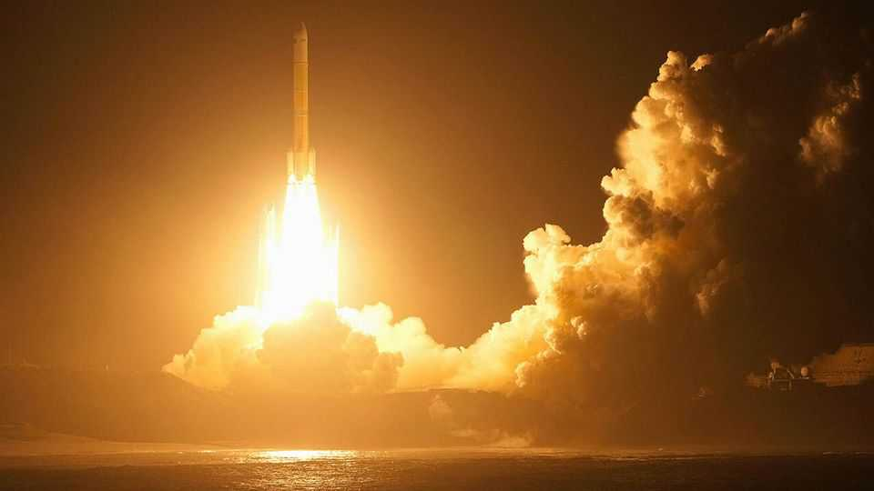

Japan’s mission to Mars’s moons takes off
It will collect samples and search for signs of ancient life

Oct 22nd 2026
ORBITERS, LANDERS and rovers have travelled to Mars, but none has returned. The Japan Aerospace Exploration Agency (JAXA) intends for that to change. On October 20th its Martian Moons eXploration (MMX) mission lifted off from Tanegashima, an island in southern Japan. The probe will spend the next year travelling to Mars, where it aims to land on Phobos, the larger of the planet’s two moons, collect at least ten grams of rock and dust, and return the haul to Earth in 2031. Planetary scientists hope the mission will resolve a long-standing puzzle: how Mars’s moons were formed—and, in the process, reveal much about the planet itself.
Phobos and Mars’s other moon, Deimos, are small, respectively about 22km and 12km across, and look like lumpy potatoes. That might suggest they are asteroids that were captured by Mars’s gravitational field after straying too close. Captured asteroids, however, usually have tilted, elliptical orbits, whereas both moons follow nearly circular paths around the planet’s equator. That hints at another possible origin: a giant collision that threw debris into orbit that later gathered into moons.
JAXA has spent over a decade developing MMX, working with the space agencies of America, Europe and Australia. The mission builds on Japan’s record of returning samples from space. Its Hayabusa mission collected small amounts of grains from Itokawa, an asteroid which comes close to Earth, and brought them home in 2010. Its successor, Hayabusa2, brought back five grams of material—well above the mission’s target—from Ryugu, another near-Earth asteroid, in 2020. The samples proved rich in water-bearing molecules and organic compounds, offering clues to how asteroids may have carried the ingredients for life to Earth.
MMX’s mission is more demanding. Phobos’s surface gravity is roughly one-2,000th of Earth’s, but it is 40 times greater than Ryugu’s. That is strong enough to pose a crash risk for a delicate spacecraft, explains Erik Asphaug, a planetary scientist at the University of Arizona. The Hayabusa missions also followed a “touch-and-go” method in which the spacecraft briefly kissed the asteroids. In contrast, MMX will land on Phobos and extract samples from beneath its surface.
And MMX’s makers want to do a lot more during its three years orbiting Mars. An instrument called MEGANE (pronounced “meh-gah-neh”, like the Japanese word for spectacles), developed by NASA, will measure gamma rays and neutrons given off when cosmic rays hit Phobos, thus revealing its chemistry. A small European rover will explore its surface. After departing Phobos, MMX will conduct fly-bys of Deimos to observe it, too, up close.
If the samples make it safely back to Earth, scientists reckon they might settle which of the two origin stories is true. If Phobos is a captured asteroid, its rocks may resemble meteorites from elsewhere in the solar system. If it instead formed after a giant impact, it will contain melt fragments generated by intense heating.
Whatever Phobos’s history, its proximity to Mars means it should also have collected material blasted off the planet by asteroid impacts. Martian debris should make up about 0.1% of the samples MMX collects. Scientists already have Martian meteorites, but these are mostly hard volcanic rocks that survived the journey through space and Earth’s atmosphere. Sara Russell, a planetary scientist at the Natural History Museum in London who will help analyse MMX’s samples, hopes the mission could recover softer sedimentary material. “That’s the material where we might see biosignatures,” she says, offering clues to whether Mars was once habitable.
There is reason to wonder. Ancient riverbeds and lake deposits suggest Mars once had liquid water and a thicker atmosphere. Unlike the planet itself, its moons have undergone little geological change. They may therefore have preserved fragments of that distant past like a time capsule, says Elizabeth Tasker, an astrophysicist at JAXA. The two small moons could thus help answer a much bigger question: whether life existed on the red planet. ■